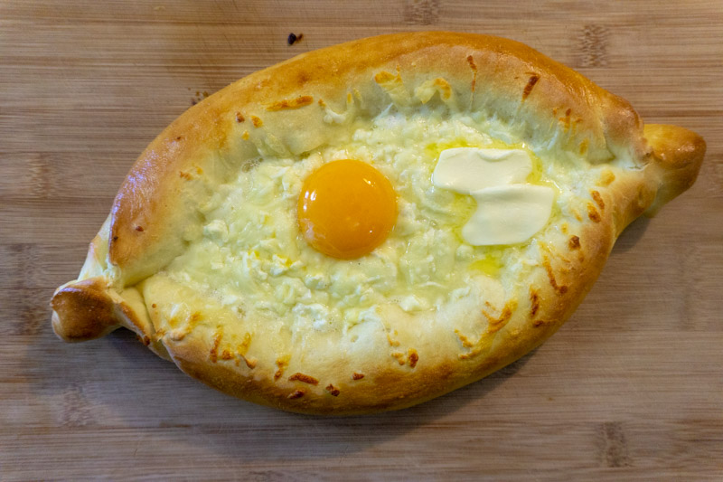

Home
Khachapuri

Khachapuri is one of the most famous Georgian dishes, a warm, soft bread
filled with cheese. It's considered a national staple and comes in many regional styles.
Common types of Khachapuri:
- Imeruli - round bread with cheese inside
- Adjaruli - the "boat-shaped" version with melted cheese, butter, and a raw egg on top
- Megruli - Like imeruli but with extra cheese and egg sauce on top
- Penovani - Flaky puff-pastry khachapuri
- Osuri - filled with potatoes and cheese
The Ingredients
Dough
- All purpose flour
- Warm water or milk
- Yeast
- Salt
- A little sugar
- Oil or melted butter
Cheese filling
- Traditionally:
- Imeruli cheese
- Suluguni cheese
- If you can't find Georgian cheeses, a good substitute mix is:
- Mozzarella (for stretch)
- Feta (for saltiness)
- Or mozzarella + cottage cheese + a little feta
- Some recipes add:
- A small amount of butter
- An egg
Step-by-step recipe for Adjaruli Khachapuri
Ingredients
Dough
- 2 cups (250 g) flour
- 1/2 cup warm milk or water
- 1 tsp dry yeast
- 1 tsp sugar
- 1/2 tsp salt
- 1 tbsp oil or melted butter
Cheese filling
- 300-350 g cheese total:
- Traditional: suluguni + imeruli
- Substitute: 200 g mozzarella + 100-150 g feta
- 1 egg (for the topping)
- 1-2 tbsp butter (for serving)
Steps
Activate the Yeast
- Mix warm water/milk with sugar and yeast.
- Let it sit for 5-10 minutes until foamy.
Make the dough
- Add flour, salt, and oil
- Knead until smooth and soft
- Cover and let it rise 1 hour, until doubled.
Prepare the Cheese
- Grate or crumble the cheeses
- Mix mozzarella + feta if using substitutes
Shape the Boat
- Roll the dough into an oval (about 30-35 cm long)
- Sprinkle the cheese evenly in a line down the center
- Roll the long sides inward toward the center to form a log with cheese inside
- Pink the ends to close them, forming the classic boat shape
- Open the center slightly so the cheese is visible
Bake
- Preheat oven to 230-240 degrees (450-465 F)
- Bake for 12-15 minutes until the cheese is melted and the crust is golden
Add the egg
- Take the khachapuri out of the oven
- Make a small well in the hot cheese
- Crack 1 egg into the center
- Return to the oven for 1-2 minutes, just until the whites start to set but the yolk stays runny
Serve the traditional way
- Add 1-2 tbsp butter on top
- Mix the cheese, butter, and egg together while hot
- Tear off pieces of bread and dip into cheesy filling